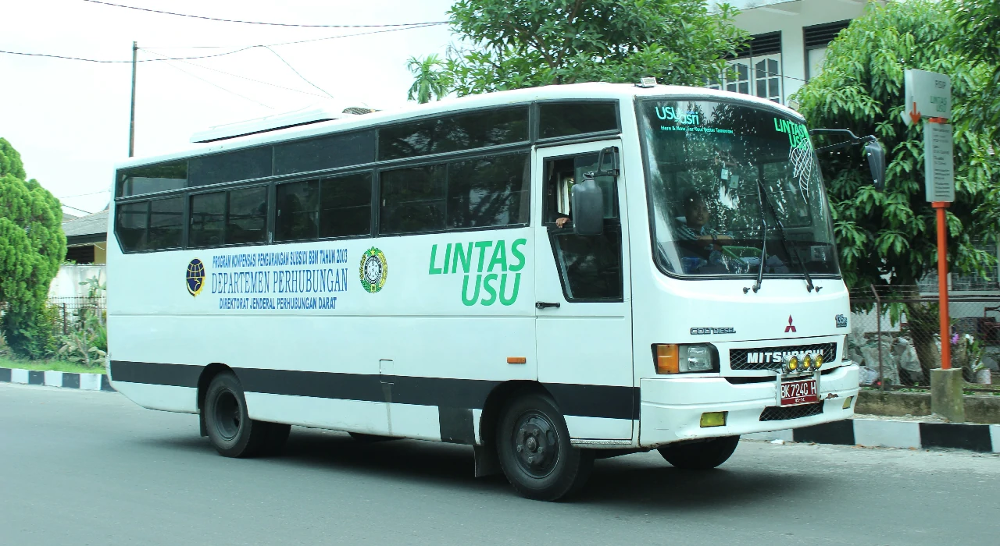

TENTANG LINUS
Universitas Sumatera Utara menghadirkan layanan transportasi transit bernama Bus LINUS (Lintas USU), yang beroperasi di sekitar area Kampus USU Padang Bulan. Diluncurkan pada 9 Maret 2013, layanan ini dirancang khusus untuk memudahkan mobilitas civitas academica USU secara gratis.
Dengan 2 armada yang siap melayani setiap beroperasi, Bus LINUS mengelilingi kawasan kampus setiap hari perkuliahan. Mahasiswa dapat menumpangi bus ini dengan menunggu di halte-halte yang tersebar dari pintu 1 hingga pintu 4 Kampus USU. Bus LINUS menjadi primadona di kalangan mahasiswa, tidak hanya karena layanan gratis yang ditawarkan, tetapi juga berkat kenyamanannya. Dilengkapi dengan kursi ergonomis dan pendingin udara, perjalanan dengan bus ini menjadi lebih menyenangkan.
Selain menjadi solusi transportasi yang efisien, Bus LINUS juga sering menjadi tempat interaksi antar mahasiswa, mempererat hubungan sosial di lingkungan kampus. Dengan semua keunggulannya, Bus LINUS tidak hanya mempermudah mobilitas, tetapi juga memperkaya pengalaman kampus yang lebih nyaman dan dinamis di Universitas Sumatera Utara.
| Operasional | |
|---|---|
| Hari | Waktu |
| Senin-Jumat | 07.30-17.00 |
| Sabtu | 07.30-13.00 |
| Tiba setiap 10-15 Menit | |
*Harap Tunjukkan Kartu Tanda Mahasiswa/Staff pada saat naik.
*Harap selalu menjaga ketertiban, kesopanan, dan kebersihan untuk kenyamanan bersama.
| Prosedur Naik | |
|---|---|
| Perempuan | Naik dari pintu belakang |
| Laki-laki | Naik dari pintu depan |
| Cara Keluar | Semua keluar dari pintu depan |
| *Jangan lupa mengucapkan terima kasih kepada supir. | |